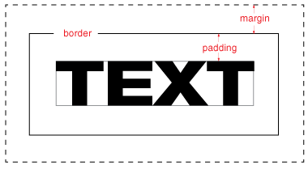
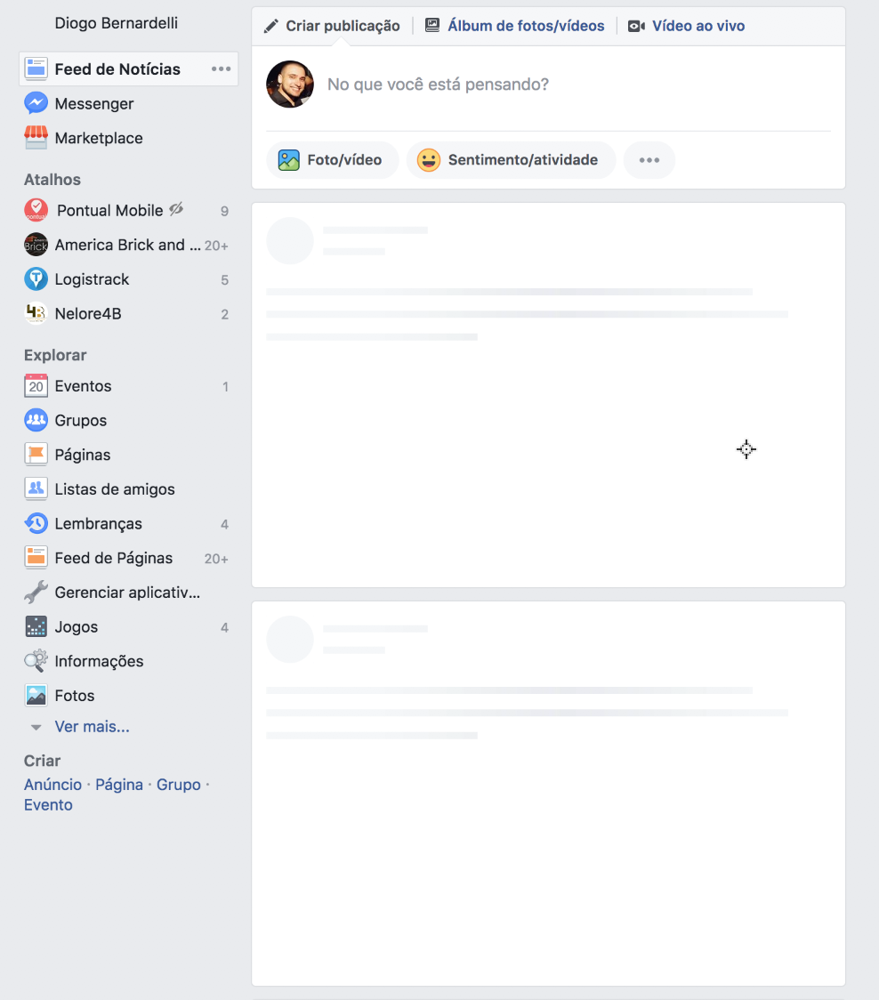

HTML
HTML é novinho (chegou em 2013) e traz uma série de tags extremamente úteis tanto para os desenvolvedores quanto para a semântica da página e os motores de busca (Google, Yahoo (?), Cadê (??), etc).
Alguns exemplos de tags HTML5 úteis:
<header> Define um cabeçalho para o documento ou uma seção
<nav> Define links de navegação no documento
<footer> Define o rodapé do documento ou seção
<address> Normalmente utilizado no rodapé para identificar o endereço e dados de contato
<section> Define uma seção no documento
<main> Define o conteúdo principal de um documento
Ainda que muitos princípios e altorimos dos buscadores tenham mudado para o rankeamento das páginas, uma boa semântica e o bom uso das tags (incluindo a de marcação de títulos) continua indispensável e muito importante!
Indo do 1 ao 6, as tags halgumnúmero servem para indicar a importância (em ordem) do conteúdo da página.
Um documento com vários h1 ou h2 (ou qualquer outro) faz os mesmos perderem a importância para os buscadores.
A questão acima influciencia demaaaais a navegação de pessoas com algum tipo de deficiência visual pelo website, pois eles utilizam o teclado (tecla h) para pularem de título em título, do mais relevante para o menos relevante.
Mas não são só os títulos que influenciam nesse caso: imagens e títulos sem title, botões fazendo papel de links e vice-versa, texto extenso sem a tag p, entre outros, dificultam demais a usabilidade.
Um site bem estruturado é um site que, mesmo sem vínculo com qualquer CSS, continua legível. Já fizeram esse teste?
XABLAU - AGORA TUDO FAZ SENTIDO!
CSS
Primeiro posicionamento, depois dimensões, depois 'decorações', etc.. - isso se chama 'alfabetizar as propriedades CSS' e tem impacto na performance.
Um exemplo de uma classe bem estruturada:
Deus sabe que você já tentou criar espaço entre elementos usando um padding maroto, ou usou margin na letra dentro de um botão ou caixa pra aumentar o tamanho dessa caixa. Aiaiai!
Back-end-mente falando, é como você salvar um integer num campo do tipo string e depois usar um to_i pra converter. Funciona? Óbvio! É a forma correta? Diz pra mim..

Quando um conteúdo ainda não foi carregado, o ideal é que seu container tenha um mínimo de tamanho definido (min-height já ajuda), evitando aqueles topos que do nada aparecem e jogam a notícia que você ia clicar lá pra baixo, fazendo você clicar numa propaganda de viagra SEM QUERER QUERENDO.
Como devia ser:

Como a gente faz: acesse globoesporte.com no celular
Assim como no Back-end você nao usa (ou não deveria usar) variáveis com o nome do valor da mesma (como idade_13_anos: 13 anos), no CSS o mesmo princípio se aplica.
Imagina usar uma classe botaoAzulGrande e depois o layout mudar para um botão vermelho pequeno? Que bagunça!
O nome da classe tem que ser parcialmente genérico para ser reutilizado (como .actionButton ou .warning), mas não tão genérico a ponto de não se encaixar em todos os casos (como simplesmente .link ou .botao)
Existem algumas libs e comunidades que utilizam coisas como o código a seguir, porém acho péssimo para o HTML, e caso o layout mude, você terá que sair caçando arquivo por arquivo que utilizava aquela classe:
(acreditem: se levantei esse tópico é porque já vi isso - mais de uma vez)
Dizem que o padrão de animações pra web é algo entre 150ms e 300ms. Acima disso, fica cansativo e com o tempo, somado, irá tomar muito mais tempo dele do que deveria.
Esse problema fica mais claro na prática:
JS
O ES6 trouxe várias melhorias (assim como toda atualização do JS), e uma delas muito útil é o famigerado arrow function.
A questão é: use um ou outro!
Ambos retornarm:
Guia prático do ES6 e seus métodos: clique aqui, brow.
- Legibilidade: padroniza o código para vários devs, evitando uma bagunça
- Ler o log do ESLint ajuda (e muito) achar erro de sintaxe, ao invés de checar manualmente no painel de inspeção do navegador
- Evita erro de falta (ou excesso) de tabs ou espaços
- Ainda que hoje em dia o código seja compilado dependendo do framework, no caso de não ser, em navegadores mais antigos (como o lindo IE8) uma vírgula a mais (ou a menos) pode impactar no funcionamento do seu lindo código Javascript.
Configurações do ESLint que salva vidas:
BÔNUS
A diferença principal entre o var e o let é que enquanto o primeiro tem escopo de função, o segundo possui escopo de bloco: